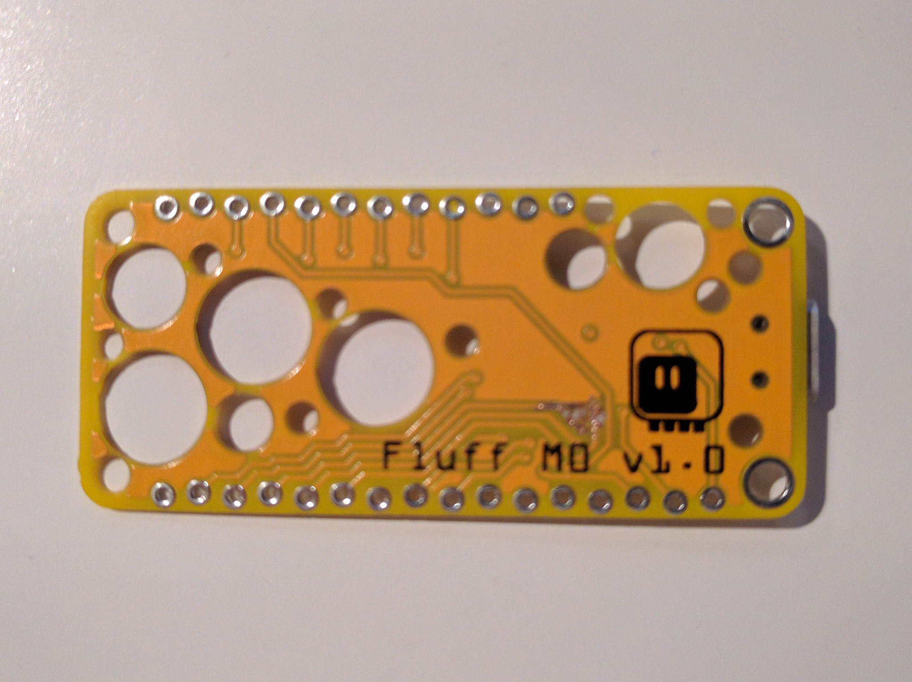

Oops!¶
Published on 2020-05-26 in Fluff M0.
Would you believe me if I told you that I made a pretty stupid (and easily avoided) mistake in this design? If you have followed any of my previous projects, this should be an obvious thing to you. Of course I made a stupid mistake, that’s how I work after all! And you would be completely right! Here is a fragment of the schematic that I posted earlier, with one little detail marked in red. Does it strike it as somewhat odd, perhaps?
Yes, I swapped MISO and SCK pins. No, any FeatherWing that uses SPI will not work with Fluff M0 v1.0 because of that. Sorry to anyone who used my gerbers. What can be done about it? Well, those are the tracks in real life:
What can you do when your project has a mistake like that? There is only one thing left to do: scrape it. With a sharp knife. Like this:
(Sorry for potatocam.) And then you solder some thin wires to it, like this:
And then you fix the firmware and the gerbers:
It’s a bit sad, because it’s actually easier to route the correct pins. Oh well. In any case, version 1.1 is here: